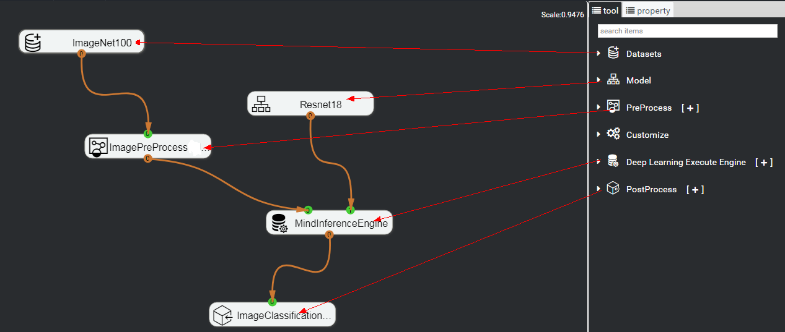
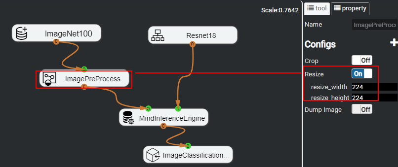

Orchestrating the Process
You can double-click the .mind file （for example, Demo.mind） to open the engine process orchestration window, as shown in Figure 1.
Figure 1 Process orchestration window 
You can perform the following operations on the nodes in the figure: place nodes, delete nodes, copy nodes, set node attributes, save nodes, and add nodes. For details, see Basic Node Operations.
Figure 2 shows an example of the ResNet-18 network.
Figure 2 ResNet-18 network example 
The ResNet-18 network consists of the following nodes: a dataset, a model, a data pre-processing node, an execution engine, and an image post-processing node.
Procedure
Add a model.
In this example, Model > Built-in Models > Resnet18 is used.
To use your own model, choose [+] on the right of Model > My Models. In the New Model dialog box that is displayed, import the model file, that is, the weight file, configure the parameters, and convert the custom model into a model supported by the Huawei NPU.
For details, see 5.2.1.1 "Adding a Custom Model Component" in the Mind Studio Basic Operations.
Add a dataset node.
In this example, Datasets > BuiltIn Datasets > ImageNet100 is used.
To use your own dataset, select [+] on the right of Datasets > My Datasets. In the displayed Import Dataset dialog box that is displayed, set Dataset Name, Data Type, and Data Source, and import the custom dataset.
For details about how to add dataset parameters, see 4.2.2 "Importing a Dataset" in the Mind Studio Basic Operations.
Place the required nodes in their positions.
- On the tool tab in the right pane, click Datasets to expand the dataset list and expand its subitem My Datasets.
Select the ImageNet control, hold down the left mouse button on the control, drag it to the drawing area on the left, and release the left mouse button, as shown in Figure 3.
After the ImageNet node is placed, repeat 3.a and 3.b to place the following four nodes:
Resnet18 node under Model > BuiltIn Models
- ImagePreProcess node under PreProcess
- MindInferenceEngine node under Deep Learning Execute Engine
- ImageClassificationPostProcess node under PostProcess
After all nodes are configured, the final node placement result is displayed, as shown in Figure 4.
Figure 4 Node placement example
 NOTE:
NOTE: - When Target is set to ASIC or Atlas DK, select the ImagePreProcess node under PreProcess.
- When Target is set to Local, select the ImagePreProcessPillow node under PreProcess.
- The CaffeInferenceEngine and MindInterfaceEngine nodes under Deep Learning Execute Engine are similar. They can also be used for the inference of the classification network and detection network. However, CaffeInferenceEngine can only run in a local simulation environment.
Configure the node properties.
To meet the requirements of the ResNet-18 network, you need to set the properties of the ImagePreProcess node.
- Click ImagePreProcess.
- Enable the Resize function on the property tab on the right.
- Set resize_width and resize_height to 224 （the function is enabled by default, and the width and height are 224）, as shown in Figure 5.
Figure 5 Modifying node properties
 NOTE: - The Resize configurations must be consistent with the model input defined by the input_param parameter in the .prototxt file. For the ResNet-18 model, the input data must be 224 x 224.
- In a simulation environment, the pre-processing node is ImagePreProcessPillow.
- The configurations of Resize must be the consistent with that of ImagePreProcess.
- Mean Value also needs to be set for this node （Subtraction average value/Average value of channel n）:
The B, G, and R values of the inception_v4, xcecption, and inception_v3 models are all 128. Retain the default values of mean_of_B, mean_of_G, and mean_of_R for other models. The default values are 104, 117, and 123, respectively. - Enable Scale for the densenet, moblienet, moblienet_v2, inception_v4, xcecption, and inception_v3 models. The value is the reciprocal of Multiplying Factor （Multiplying Factor = Multiplying factor/Standard deviation of channel n or Multiplying Factor = Reciprocal of (Max – Min）. Keep Scale disabled for other network models.
Establish connections between nodes.
After the required nodes are placed and attributes are set, set up the corresponding connections.
An orange round endpoint is an output port, from which a connection line can be led out. A green endpoint is an input port and can be used to place a connection line. Figure 6 shows the final connections between the nodes.
Figure 6 Setting up connections between nodes

 NOTICE:
NOTICE:
Pay attention to the following points when setting up the connections:- A PreProcess node must be connected to input port 0 of a Deep Learning Execute Engine node.
- A model node must be connected to input port 1 of a Deep Learning Execute Engine node.
Click Save at the bottom of the canvas.
Save the orchestration process.